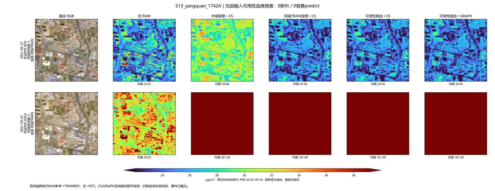

先看这四组实际结果
小屋顶较强缓解 · 0新拟合1．曲靖：原来关注的固定6格
2022-03-07：原CS → 同状态CS → 横断面保护。六格均值为27.3017 → 25.2728 → 25.3093 µg/m³。横断面保护保留了98.2%的新增降低，亮条仍有残余。
增加了什么：目标与邻域参考采用相同输入状态；再用原生10m的方向结构和两侧横断面相似性保护连续细长结构。修正可见光X，NIR与PM头保持原值。

这组适合展示小屋顶缓解。道路保护总体有限，阳泉、徐州的部分混合格仍有不利降低。
完整对照阳泉道路混合反例
新增触达 · 新辅助材料CNN2．北京：新模型多处理了哪些亮结构
S01北京2021-06-06，[r72,c38]。原VIS为0.1453，严格限制在旧材料训练域的方案不处理这里。相对CS：29特征树额外降低2.333，成本树2.121，原生10m CNN为2.505 µg/m³。
增加了什么：本日四带、过去四带形态残差Q25、历史频率/数量与有效性，共12通道的小窗；拟合一个19,441参数的材料分类CNN，再以它控制剩余可见光扣量。PM头没有重训，地图只作材料弱标签。

原30对象74格的平均直接降低由域匹配0.0912增至CNN的0.1209；但下一组南通道路也被压得更多。此处仍有地物混合，不把单格当纯屋顶真值。
CNN六个固定正反例补看第2组：另一北京地点的NIR参考，0拟合再降1.195
较保道路 · 0新拟合域匹配3．南通：看完屋顶，立即看道路代价
S26南通2021-10-30，[r13,c47]。该地图道路交格包含混合地物。原时序材料方案相对CS额外降低3.746；仅在训练域内使用材料模型后降为0。新CNN在同一点降低4.246，反而更不利。
增加了什么：没有新特征或训练；只在原VIS≥0.16且NDVI≤0.35的实际训练域内使用原材料概率。域外保留CS数值，仍显示全部原有效像元。

定义的小亮对象直接扣量全部保留；但北京上一组较暗亮结构也放弃处理，域内阳泉道路仍额外降低1.598。这是值得保留的保守并列方案。
域匹配完整六例同一点CNN不利图域内剩余道路风险
工业与污染事件 · 新背景输入及模型4．日期水平和局部屋顶，要分开看
曲靖工业环境：2022-03-07与2022-08-19。站点实测67/24，原B58为25.800/13.882，可用参考背景为56.475/11.900 µg/m³。高污染日得到明显抬升，低污染日没有同步改善。这两日期进入过背景TRAIN，只作实际工业环境展示。
增加了什么：背景模型加入同城其它站、外城/上风前1小时PM与有效城市数；可用性路由只按是否有同城参考选择已拟合模型。它调整整景日期水平，保留CS/GRAPH相对空间纹理。
曲靖03-07高污染日曲靖08-19低污染日全部匹配迁移图
另看阳泉固定事件对：也保留路由更差的情况
2021-04-27→05-07，站点49→254，变化205。外城背景预测变化171.394，可用性路由157.429；均优于旧特征控制25.031，但路由反而比外城更差。此场工业用途未逐栋核实。

整片红表示超过原RAW色限后的显示饱和，数值未截断。曲靖两张单日图各用本日RAW色限，跨日大小看数字；阳泉双日期图共用同一色限。工业园屋顶候选与实际像元PM真值仍不同。
25对事件变化RMSE：旧特征控制72.290 → 可用性路由32.842；曲靖工业候选15个未进入该背景TRAIN的日期：16.034 → 7.488。原B58历史来源重叠等限制仍在。
背景与事件完整结果工业对象实际身份
新增触达的最新进展：联合域CNN已完成206场
CS_NATIVE_CONTEXT_UNION：从相同CS起点，将过去TEMP与本日紧凑对象的剩余可见光预算逐带取较大值，避免重复扣；在联合支持域拟合一个相同结构CNN，明确处理缺历史标记。
| 固定支持上的结果 | 原时序CNN | 联合域CNN |
|---|
| 原30对象74格：实际作用对象 / 像元 | 10 / 31 | 25 / 56 |
| 原30平均直接降低 | 0.1209 | 0.3292 µg/m³ |
| 锁定道路最坏对比改变 | −0.0537 | −0.0400 µg/m³ |
| 生产区候选46对：最大核心额外降低 | 0.0202 | 0.0176 µg/m³ |
北京固定点进一步降至2.7461，来自材料权重变化。真正的新增范围见第7图大庆：原来不作用，现在降低0.9495；第8图周口也新增降低0.6070，但处在地图道路交格，须保留作反例。两图按实际变化选取作事后展示。
联合CNN全部8个正反例北京固定点大庆新增范围周口新增道路风险
作用范围有实际扩展；地图道路交格仍最多额外降低4.2055，站窗RMSE19.6426仍不胜CS的19.6395。它应与道路不利图并看，不能写成所有场景最优。
建议顺序：曲靖小屋顶 → 北京新触达 → 南通道路代价 → 日期污染水平。论文可以呈现这种取舍，不必把所有场景归成一个最佳方法。
后续历史缺失训练没有全面胜出
同一批位置成对训练有历史和缺历史输入后，原30对象平均降低从0.329增至0.367 µg/m³，但道路最坏变化由−0.040变为−0.051；北京固定点的缓解反而从2.746退到1.463。暂保留第20联合方案作为更稳妥的探索对照。
查看第21方案相同8处正反图